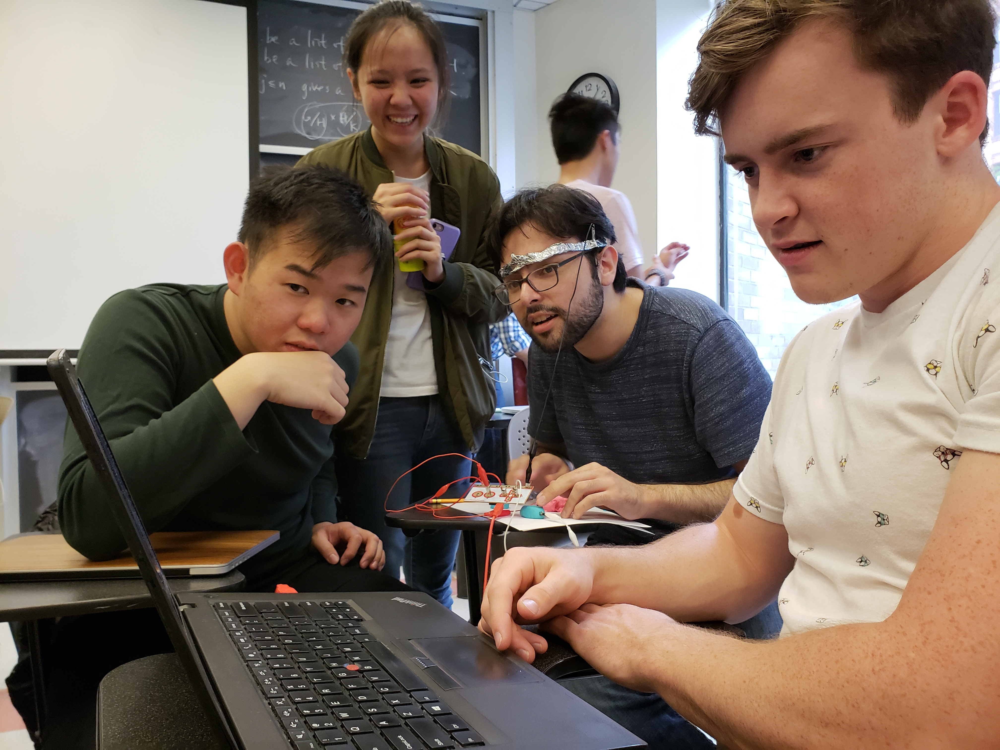
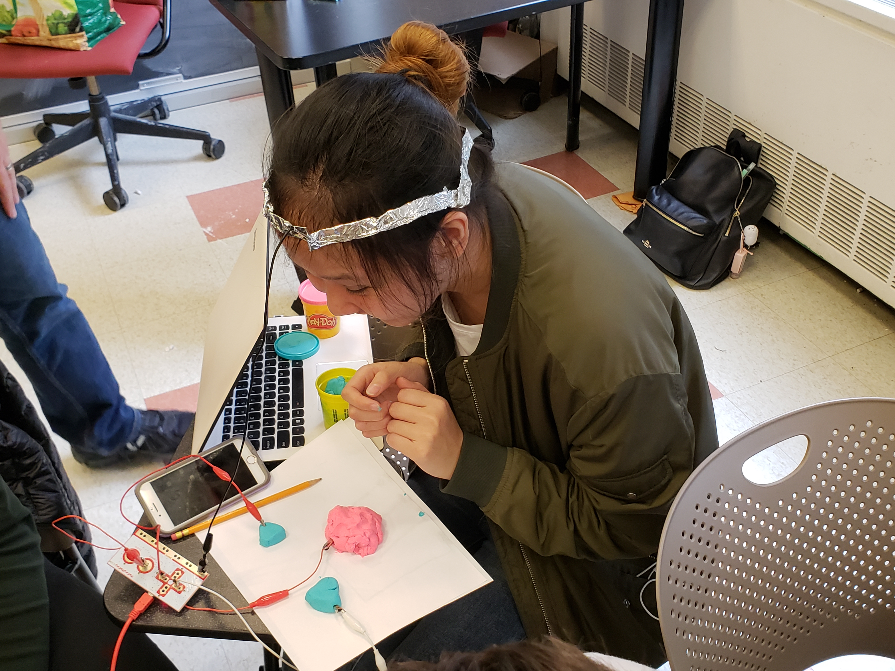

Overview
Building my first game, I wanted to stick with a familiar concept so I can spend more time making sure I understand the technical aspects of building a simple p5 experience. The game I chose to build was inspired by 'Crazy Taxi', a simple game I grew up playing a lot with my younger brother.

The basic idea of the game is to control a car as it drives around obstacles to reach the finish line, and switch lanes by moving right or left. The scoring system in that game is based on being able to make it to the end of the level in a specific time, so the levels start out fairly easily and become more difficult as the allotted time decreases and the level's length increases. Since that would require a much lengthier game than what I could build, I decided to have the goal of the game to simply reach the finish line without finishing your lives. While in Crazy Taxi, nothing happens when you bump into a car, this makes you lose a life in my game (visualized by the hearts on screen).
While I first thought of making the second level more difficutl by increasing the obstacles or the speeds, I decided to switch it up and have the cars moving in a different direction altogether. This idea was initially following an idea I had to name the levels after the three places where I live: Abu Dhabi, New York, and Cairo. In that example, AD would be the first level, where cars are in their lanes and everything is running relatively smoothly, NY would be a little more complicated, and Cairo would be utter chaos. While I eventually decided to set aside the themes/naming because I felt like it would require a greater level of detail to make sense in the game, I still preferred to have the levels be of different structure.
Level 1 (left), level 2 (right):


Makey-makey Documentation
In class, my group worked with the Makey-makey controllers to make a physical controller to play web-based games. We made a head band out of aluminum foil to complete the circuit (since skin is conductive). As for the buttons, we made them with playdough on a piece of paper. The circuit worked well and was a lot of fun! Below are some pictures of the physical computing system in actoin.
 